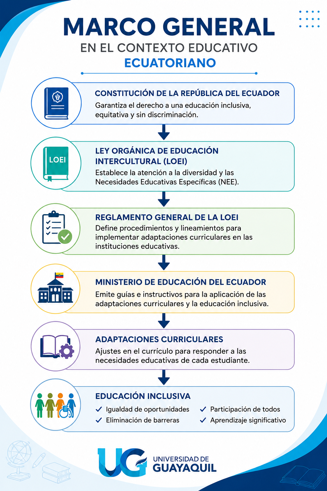

Definición
Las adaptaciones curriculares son ajustes o modificaciones que se realizan en los elementos del currículo, como los objetivos, destrezas, metodología, recursos, actividades, tiempo y evaluación, así como en las condiciones de acceso al aprendizaje. Su propósito es responder a las Necesidades Educativas Específicas (NEE) de los estudiantes, garantizando una educación pertinente e inclusiva. Su finalidad es garantizar una atención educativa efectiva a los estudiantes con Necesidades Educativas Específicas (NEE), mediante la implementación de estrategias que respondan a sus características y necesidades de aprendizaje. Asimismo, fortalecen el rol del docente como agente de cambio, promoviendo prácticas pedagógicas inclusivas que favorecen el respeto por la diversidad, la igualdad de oportunidades y la eliminación de barreras para el aprendizaje y la participación.
Lectura facilitada
Las adaptaciones curriculares son cambios en la forma en la que te enseñan o cómo te evalúan para que puedas aprender mejor según tus necesidades personales.
¿Qué se puede modificar?
- Los objetivos (lo que se espera que aprendas).
- Las destrezas y actividades que realizas en clase.
- La metodología (cómo explica el profesor) y los materiales que usan.
- El tiempo que tienes para hacer las tareas y los exámenes.
- La forma en que se te evalúa.
- Las condiciones físicas para entrar o estar en el aula.
¿Por qué son importantes?
Educación inclusiva: Ayudan a que todos tengan las mismas oportunidades de aprender, respetando que cada persona es diferente.
Eliminar barreras: Sirven para quitar los obstáculos que te impiden participar o aprender al mismo ritmo que los demás.
Apoyo docente: Permiten que tus profesores usen estrategias que se ajusten a tus características, convirtiéndose en aliados para tu éxito académico.
Audio
Apoyo visual
Importancia
Constituyen una estrategia fundamental para garantizar el acceso, la permanencia, la participación y el aprendizaje de los estudiantes con Necesidades Educativas Específicas dentro del sistema educativo regular. Su implementación favorece el desarrollo de sus capacidades y potencialidades, promoviendo la igualdad de oportunidades, la equidad y una educación inclusiva de calidad.
Lectura facilitada
Las adaptaciones curriculares son herramientas clave para asegurar que los estudiantes con necesidades educativas específicas puedan:
- Entrar y quedarse en el sistema educativo regular.
- Participar activamente en clases y actividades.
- Aprender al máximo de sus posibilidades.
Al aplicar estas adaptaciones, logramos:
- Desarrollar las capacidades y talentos de cada estudiante.
- Darles a todos las mismas oportunidades de salir adelante.
- Ofrecer una educación justa y de calidad para todos, respetando la diversidad.
Audio
Marco normativo del Ecuador
En el sistema educativo ecuatoriano, la atención a las Necesidades Educativas Específicas (NEE) se sustenta en un marco jurídico que garantiza el derecho a una educación inclusiva, equitativa y libre de discriminación.
Entre los principales instrumentos normativos se encuentran:
- Constitución de la República del Ecuador: Garantiza el derecho a una educación inclusiva, equitativa y libre de discriminación.
- Ley Orgánica de Educación Intercultural (LOEI): Establece la atención a la diversidad y la respuesta educativa a las Necesidades Educativas Específicas (NEE).
- Reglamento General de la LOEI: Regula la aplicación de estrategias y apoyos para favorecer el aprendizaje y la participación de los estudiantes.
- Lineamientos del Ministerio de Educación: Orientan a las instituciones educativas en la implementación de estrategias que eliminen las barreras para el aprendizaje y promuevan una educación inclusiva.
Asimismo, el Ministerio de Educación emite lineamientos e instructivos técnicos que orientan a las instituciones educativas en la planificación e implementación de estas estrategias, con el propósito de eliminar las barreras para el aprendizaje y la participación. Estas disposiciones contribuyen al desarrollo integral de los estudiantes, respetando sus características, capacidades y ritmos de aprendizaje, en concordancia con los principios de inclusión, equidad y respeto por la diversidad.
Los cuales establecen los lineamientos para la identificación y atención de las NEE, clasificándolas en asociadas y no asociadas a la discapacidad. Estos instrumentos orientan la implementación de prácticas pedagógicas inclusivas en las instituciones educativas.
Lectura facilitada
En el Ecuador, existen leyes y normas que aseguran el derecho de los estudiantes con Necesidades Educativas Específicas (NEE) a recibir una educación inclusiva y sin discriminación.
Estos son los documentos legales que respaldan este derecho:
Constitución de la República del Ecuador: Garantiza que todos tengan derecho a una educación inclusiva y equitativa.
Ley Orgánica de Educación Intercultural (LOEI): Define la atención a la diversidad y cómo se debe responder a las NEE.
Reglamento General de la LOEI: Establece las reglas para aplicar las estrategias de apoyo y fomentar la participación estudiantil.
Lineamientos del Ministerio de Educación: Son las guías técnicas que explican a las escuelas cómo quitar las barreras que dificultan el aprendizaje.
Además, estos instrumentos técnicos indican cómo identificar y atender las NEE, dividiéndolas en dos tipos: aquellas asociadas a una discapacidad y las que no lo están. El objetivo de todas estas normas es promover prácticas pedagógicas que respeten los ritmos, capacidades y características de cada estudiante.
Audio
Infografia
